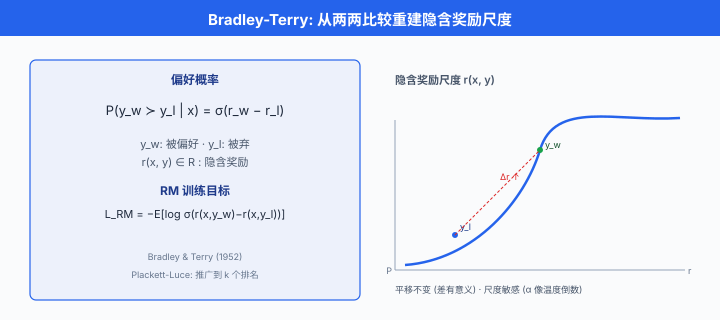
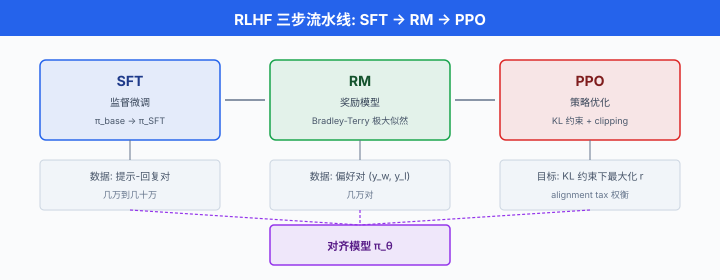
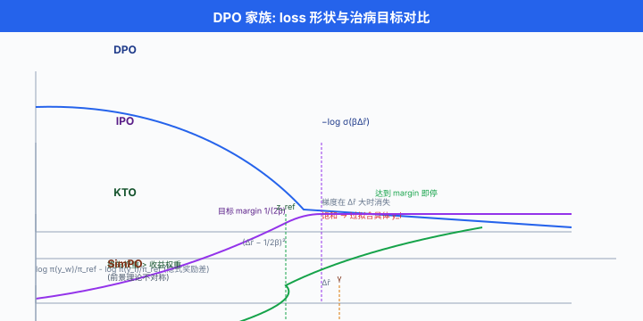

从人类反馈中学习 · RLHF/DPO 深入¶
一句话总结：把"人类觉得哪个回答更好"这件模糊的事翻译成可优化的数学目标，RLHF 走三步流水线，DPO 用一行 loss 直接砍掉奖励模型，IPO/KTO 再从不同角度修补它们的失败模式。
上一节把对齐的病灶掰开了讲：我们能写下的目标，从来配不上心里真正想要的目标。 这一节我们看第一条也是最主流的一条工程解药 —— 从人类反馈里学。 数学上它是一场"用偏好对逼近效用函数"的游戏，工程上它是一根挂着无数陷阱的钢丝.
- 第 07 章第 05 节我们已经把 RLHF (Reinforcement Learning from Human Feedback, RLHF) 三步流水线和 DPO (Direct Preference Optimization, DPO) 的 loss 形状扫过一遍。 那里的目标是"知道有这个东西"，本节的目标是"知道它为什么长这样，什么时候会坏，怎么修". 我们从头把公式再推一遍，但每一步都停下来问：这一步凭什么这么写，换一种写法会怎样。
为什么是偏好，而不是打分¶
-
一个自然的想法是让人类给回答打分 (1-10 分)，然后监督学一个回归模型去拟合分数。 早期研究试过，效果很糟。
-
原因有三条。 第一，打分的绝对值不稳定. 同一个标注员今天心情好打 8 分，明天心情差同样回答打 6 分，训练信号里全是噪声。 第二，不同标注员的量表不一致. 你的 7 分可能是我的 5 分，平均之后信号进一步稀释。 第三，打分对长度和格式高度敏感，而不是内容质量。
-
Christiano 等人在 2017 年的经典论文 Deep Reinforcement Learning from Human Preferences 里给出了主流答案：别让人打分，让人两两比较. 比较是相对的，比绝对量表稳定得多。 "A 比 B 好"这个信号比"A 是 7 分"这个信号更容易被不同人一致给出。
-
但比较信号也丢了信息 —— 我们不知道 A 比 B 好多少. 好在有一个经典的统计模型能从两两比较重建一个隐含的分数尺度，那就是 Bradley-Terry.
Bradley-Terry：从比较到隐含分数¶
- Bradley-Terry 模型 (Bradley & Terry, 1952) 假设：每个候选 \(y\) 在提示 \(x\) 下都有一个隐含的奖励分数 \(r(x, y) \in \mathbb{R}\)，而人类比较服从一个 logit 形式:
-
\(y_w\) ("winner") 是被偏好的回答，\(y_l\) ("loser") 是没被偏好的。 \(\sigma\) 是 Sigmoid. 这个式子说：两个回答分数差 \(\Delta r = r(x, y_w) - r(x, y_l)\) 越大，偏好 \(y_w\) 的概率越接近 1.
-
Bradley-Terry 有几个漂亮性质。 首先，它是 平移不变的：把所有 \(r(x, y)\) 加上一个只依赖 \(x\) 的常数，差 \(\Delta r\) 不变，偏好概率也不变。 这意味着从偏好数据学出的奖励只在同一提示内部有意义，绝对值不可比较。 第二，它是 尺度敏感的：把 \(r\) 整体乘以 \(\alpha\)，偏好概率会变得更极端 (\(\alpha > 1\)) 或更接近 0.5 (\(\alpha < 1\)). \(\alpha\) 有点像温度倒数。
-
Bradley-Terry 有一个更聪明的推广叫 Plackett-Luce，处理 \(k\) 个候选的排名 (不止两两比较). 它的形式是链式的 Softmax: \(P(y_1 \succ y_2 \succ \cdots \succ y_k \mid x) = \prod_{i=1}^{k-1} \frac{\exp(r(x, y_i))}{\sum_{j \geq i} \exp(r(x, y_j))}\). RLHF 里一般只用两两比较，但需要更细粒度信号时会切到 Plackett-Luce.
-
给定一批人类比较数据 \(\mathcal{D} = \{(x_i, y_w^i, y_l^i)\}_{i=1}^N\)，奖励模型 \(r_\phi\) 的训练目标就是最大化偏好数据的对数似然，等价于最小化负 log-likelihood:
- 展开 Sigmoid，这个 loss 长得就像逻辑回归里那种成对 hinge，数学上叫成对 logistic 排序损失. 梯度指向"拉高 \(r_\phi(x, y_w)\)，压低 \(r_\phi(x, y_l)\)"这个方向，力度由当前 \(\Delta r\) 决定 —— 当模型已经把偏好分开时，梯度自然减小。

RLHF 三步流水线的每一步在做什么¶
- 有了 Bradley-Terry，我们可以把 InstructGPT (Ouyang et al., 2022) 论文里的 RLHF 三步流水线完整讲清楚。
第一步：监督微调 SFT¶
- 从预训练基座 \(\pi_\text{base}\) 出发，用高质量的"提示-回复"配对数据 (通常几万到几十万条，人写或精选) 做监督微调 (Supervised Fine-Tuning, SFT). 目标是极大似然:
-
SFT 做的事很朴素：让模型学会"当被这样提问，大概该这样回答"的基础形状. 没有 SFT 直接上 RLHF，探索空间太大，RL 根本收敛不了。 SFT 后的模型 \(\pi_\text{SFT}\) 会作为后续 RL 阶段的参考策略 (reference policy) \(\pi_\text{ref}\).
-
有个反直觉的经验教训：SFT 数据不是越多越好。 Zhou 等人 2023 年的 LIMA 论文用 1000 条精心挑选的 SFT 样本，就能达到接近满量数据的效果。 数据质量 > 数量，尤其在 RLHF 前置阶段。
第二步：训练奖励模型¶
-
收集人类比较数据 \(\mathcal{D}_\text{RM} = \{(x_i, y_w^i, y_l^i)\}\)：对每个提示 \(x\)，由 \(\pi_\text{SFT}\) 采样多个回答，让人类标注员选出更好的那个。 数据量典型是几万到几十万对。
-
奖励模型 \(r_\phi(x, y)\) 一般是从 \(\pi_\text{SFT}\) 初始化的另一个 Transformer，顶层换成一个标量 head (取最后一个 token 的隐藏态过一个线性层). 用上面推导的 \(\mathcal{L}_\text{RM}\) 训练，数十亿参数，训几千步。
-
工程 trick 一：reward centering. 因为 Bradley-Terry 只关心差，训练时可以给每个 batch 减去 mean，让奖励尺度稳定，便于后续 KL 系数调参。
-
工程 trick 二：reward model ensemble. 单个奖励模型很容易被 hack. 训 3-5 个不同初始化 / 不同数据切片的奖励模型，用方差作为不确定性估计，高方差样本直接惩罚，降低奖励模型盲区的 exploitation.
-
工程 trick 三：拒绝 tie 样本. 标注员在 \(y_w\) 和 \(y_l\) 都很好或都很差时给的偏好几乎是抛硬币，训练里保留这些样本会引入噪声。 Meta 的 Llama 2 论文里明确剔除 tie.
第三步：用 PPO 优化策略¶
- 有了奖励模型 \(r_\phi\)，我们要训一个新策略 \(\pi_\theta\) (从 \(\pi_\text{SFT}\) 初始化) 去最大化奖励，同时用 KL 约束不能跑离 \(\pi_\text{ref}\) 太远。 完整 RLHF 目标是:
-
第二项就是 token 级 KL 惩罚 (期望下等价于 \(D_\text{KL}(\pi_\theta \| \pi_\text{ref})\)). \(\beta\) 通常在 \([0.01, 0.2]\)，太小会 hack 奖励模型 (上一节讲过 alignment tax 权衡)，太大则学不到东西。
-
具体优化用近端策略优化 (Proximal Policy Optimization, PPO) (Schulman et al., 2017). 相比原始 RL 里的 PPO, RLHF 里的 PPO 有几个变异。
-
变异一：reward 是稀疏的. 只有序列结束才拿到奖励 \(r_\phi(x, y)\)，中间每一步只有 KL 项。 所以 advantage estimation 里需要把最终奖励回传给每一步。 通常用 GAE (Generalized Advantage Estimation) 做 credit assignment.
-
变异二：value network 单独学. PPO 需要一个 value 网络 \(V_\psi(x, y_{<t})\) 来算 advantage. RLHF 里这个 value 网络通常从奖励模型初始化，再单独用 MSE loss 训:
- 变异三：PPO clipping. 用 importance sampling 比 \(\rho_t(\theta) = \frac{\pi_\theta(y_t \mid \cdot)}{\pi_{\theta_\text{old}}(y_t \mid \cdot)}\)，目标是:
-
\(\epsilon\) 通常 0.2. Clipping 防止一步更新走太远，是 PPO 稳定性的核心。 RLHF 里因为 loss 天生就大，clipping 尤其重要。
-
变异四：reward whitening / clipping. 训练早期奖励尺度可能很大，需要在 advantage 计算前做 batch 归一化 (减均值除标准差)，再 clip 到 \([-c, c]\) (通常 \(c=10\)).
-
一段紧凑的 PPO-in-RLHF 训练循环伪代码把上面这些串起来:
# RLHF-PPO 训练循环 (伪代码, 省略并行与 batch 处理细节)
policy = pi_theta.copy() # 从 SFT 初始化
policy_old = policy.copy()
value_net = init_value_from_reward_model(rm) # value 网络
ref_policy = pi_theta.detach() # 冻结的参考策略
for iteration in range(N_ITER):
# 1. rollout: 用 policy_old 采样 rollout_batch
prompts = sample_prompts()
with torch.no_grad():
responses = policy_old.generate(prompts) # 生成回答
logp_old = policy_old.log_probs(prompts, responses)
logp_ref = ref_policy.log_probs(prompts, responses)
rewards = rm(prompts, responses) # 序列末尾稀疏奖励
values = value_net(prompts, responses) # 每 token value
# 2. 计算 KL-augmented reward 与 advantage
# r_t = -beta * (logp_old - logp_ref) 在中间 token, 末尾加上 rm 奖励
per_token_rewards = -BETA * (logp_old - logp_ref)
per_token_rewards[:, -1] += rewards
per_token_rewards = whiten_and_clip(per_token_rewards) # trick 四
advantages = compute_gae(per_token_rewards, values, GAMMA, LAMBDA)
returns = advantages + values
# 3. 多个 epoch 对同一 rollout 做 PPO 更新
for _ in range(PPO_EPOCHS):
logp_new = policy.log_probs(prompts, responses)
ratio = torch.exp(logp_new - logp_old)
# 3a. clipped surrogate
surr1 = ratio * advantages
surr2 = torch.clamp(ratio, 1 - EPS, 1 + EPS) * advantages
policy_loss = -torch.min(surr1, surr2).mean()
# 3b. value loss
value_pred = value_net(prompts, responses)
value_loss = ((value_pred - returns) ** 2).mean()
# 3c. 加权
loss = policy_loss + V_COEF * value_loss - ENT_COEF * entropy(logp_new)
loss.backward()
optimizer.step()
policy_old = policy.copy() # 下一轮 rollout 用最新策略
- 注意，训练 policy 时 KL 是放在 reward 里做为 token 级惩罚 (per_token_rewards 那一行)，而不是像 SFT 那样直接加到 loss. 这是 InstructGPT 论文里的选择 —— 让 KL 参与 advantage 估计，与真实奖励在同一时序尺度上竞争。

DPO：一行 loss 消掉整个奖励模型¶
-
第 07 章 05 节我们已经写下了 DPO 的最终 loss. 这里我们把推导完整走一遍，因为这个推导本身是 alignment 领域最漂亮的数学之一，而且理解它有助于后面理解 IPO / KTO 的补丁思路。
-
起点: RLHF 的目标函数 (KL-约束的期望奖励最大化):
- 第一步：求闭式最优解. 用拉格朗日乘子法对约束"\(\pi\) 是合法概率分布" 求解。 对固定 \(x\)，把 KL 展开:
- 把这个式子看成 \(-\beta \cdot D_\text{KL}\big(\pi(\cdot \mid x) \,\|\, \pi^\ast(\cdot \mid x)\big) + \text{const}\)，其中
-
因为 KL 散度非负且当且仅当两个分布相等时为零，所以最大化上式等价于让 \(\pi = \pi^\ast\). 这就是 RLHF 的闭式最优解。
-
第二步：反解奖励. 把上面式子取对数:
- 解出:
- 第三步：代入 Bradley-Terry. Bradley-Terry 只关心奖励差，而 \(\beta \log Z(x)\) 只依赖 \(x\) (不依赖 \(y\))，所以差里它抵消掉了:
- 第四步：把 \(\pi^\ast\) 替换成待训模型 \(\pi_\theta\). Rafailov 等人 (2023) 的关键跳跃：与其先训奖励模型再用 RL 逼近 \(\pi^\ast\), 不如直接把 \(\pi_\theta\) 当作最优解，用 Bradley-Terry 的极大似然直接监督训练. 于是 DPO loss 就是:
-
这个式子的美感在于：我们从来没有显式训过奖励模型，但整个训练在数学上和"训一个奖励模型再用 KL-约束 RL 优化它"等价。 奖励模型是隐式藏在 \(\pi_\theta\) 和 \(\pi_\text{ref}\) 的对数比里。
-
从工程上看，DPO 的实现极其干净。 一段 PyTorch 伪代码:
import torch
import torch.nn.functional as F
def dpo_loss(policy_model, ref_model, batch, beta=0.1):
"""
batch 结构: {
'prompt_ids': [B, Lp],
'chosen_ids': [B, Lc], # y_w
'rejected_ids': [B, Lr], # y_l
}
"""
# 1. 拼接 prompt+chosen 与 prompt+rejected, 一次前向拿 logp
chosen_input = torch.cat([batch['prompt_ids'], batch['chosen_ids']], dim=1)
rejected_input = torch.cat([batch['prompt_ids'], batch['rejected_ids']], dim=1)
# 2. 分别在 policy 与 ref 上算完成部分的 log 概率之和
# (只对 chosen/rejected 那段 token 累加, 忽略 prompt 部分)
policy_chosen_logps = compute_logp(policy_model, chosen_input, batch['prompt_ids'].shape[1])
policy_rejected_logps = compute_logp(policy_model, rejected_input, batch['prompt_ids'].shape[1])
with torch.no_grad(): # ref 模型冻结, 不参与梯度
ref_chosen_logps = compute_logp(ref_model, chosen_input, batch['prompt_ids'].shape[1])
ref_rejected_logps = compute_logp(ref_model, rejected_input, batch['prompt_ids'].shape[1])
# 3. 计算 implicit reward 差
chosen_reward = beta * (policy_chosen_logps - ref_chosen_logps)
rejected_reward = beta * (policy_rejected_logps - ref_rejected_logps)
# 4. DPO loss = -log σ(Δr)
logits = chosen_reward - rejected_reward
loss = -F.logsigmoid(logits).mean()
# 附带: reward margin (监控用) 与 accuracy
reward_margin = (chosen_reward - rejected_reward).mean()
reward_accuracy = (chosen_reward > rejected_reward).float().mean()
return loss, reward_margin, reward_accuracy
- 对比 RLHF 的 PPO 训练循环，DPO 训练没有 rollout，没有 value 网络，没有奖励模型推理，只是在偏好数据上做梯度下降。 一台 8×A100 能跑 RLHF 的规模，DPO 常常只要 4×A100 就够，训练时间也从几十小时缩到几小时。
DPO 的隐忧：它到底在优化什么¶
-
DPO 太简单了，简单到让人怀疑"这也能行?". 从公开的 benchmark 上看它常常打平甚至超过 PPO. 但仔细看它的 loss，有几个隐藏假设需要警觉。
-
假设一：\(\pi_\text{ref}\) 就是最优先验. DPO 的推导里 \(\pi^\ast(y \mid x) \propto \pi_\text{ref}(y \mid x) \exp(r/\beta)\)，隐含地把 \(\pi_\text{ref}\) 当成一个合理的先验. 如果 SFT 模型本身就有偏 (比如根本不知道如何回答某类问题), DPO 无法用偏好数据修正这类知识盲区，只能在 \(\pi_\text{ref}\) 已经"能采到"的分布里重加权。
-
假设二：偏好数据的 log-ratio 无界. 在真实 dataset 上，一些 \(y_w\) 在 \(\pi_\text{ref}\) 下概率极低，会让 \(\log \frac{\pi_\theta(y_w)}{\pi_\text{ref}(y_w)}\) 冲到很大。 一些 \(y_l\) 在 \(\pi_\theta\) 下也可能被推到接近 0. 训练稳定性会崩。 Rafailov 等人的原论文里这个问题不明显，后续社区 (尤其 Anthropic) 报告了在大 batch / 长序列上的 loss 尖峰。
-
假设三：Bradley-Terry 假设本身. 现实里"人类偏好"未必满足 Bradley-Terry 的独立性假设 —— 有的偏好是噪声主导的 (两个回答都很好或都很差，标注员随手选)，有的是长度偏见 (标注员倾向选更长的). DPO 会把这些噪声当作真信号去拟合。
-
假设四：隐式奖励可能过拟合到具体的偏好对. 因为 DPO 的"reward"是从模型参数直接读出的 \(\beta \log \frac{\pi_\theta}{\pi_\text{ref}}\)，训练时会主动降低 \(\pi_\theta(y_l)\) 的概率来放大差距。 极端情况下 \(\pi_\theta(y_l) \to 0\)，但这未必意味着 \(\pi_\theta\) 学到了什么 —— 它只是学会了"回避这个具体的 \(y_l\)".
-
这些隐忧催生了一系列 DPO 变体，每个都是修补一处。
DPO 之后的族谱：IPO / KTO / SimPO¶
- IPO (Identity Preference Optimization), Azar 等人 (2023) 提出。 关键洞察：DPO 里 Sigmoid 会饱和 —— 当 \(\log \frac{\pi_\theta(y_w)}{\pi_\text{ref}(y_w)} - \log \frac{\pi_\theta(y_l)}{\pi_\text{ref}(y_l)}\) 已经很大，\(\log \sigma\) 的梯度几乎为零，训练无法继续压制 \(y_l\). 结果 DPO 有时会推得过头，让 \(y_l\) 掉到不该有的概率。 IPO 直接把 sigmoid 换成 identity，用 MSE 而不是 log-sigmoid:
-
相比 DPO 的"越大越好", IPO 有一个目标 margin \(\frac{1}{2\beta}\)，达到就停。 这在噪声偏好数据上更稳。
-
KTO (Kahneman-Tversky Optimization), Ethayarajh 等人 (2024). 名字来自行为经济学的前景理论 (prospect theory) —— Kahneman 和 Tversky 证明人类对损失比对收益更敏感。 KTO 的实际贡献是：它不需要成对偏好，只要每条样本被标为 "好" 或 "坏" 就行。 这对数据收集是巨大的解放。
其中 \(l \in \{+1, -1\}\) 是好坏标签，\(w\) 是不对称权重 (损失权重高于收益权重，前景理论式), \(v\) 是一个 sigmoid 型损失函数。 具体形式:
-
\(r_\theta(x, y) = \log \frac{\pi_\theta(y \mid x)}{\pi_\text{ref}(y \mid x)}\) 是隐式奖励，\(z_\text{ref} = \mathbb{E}_{y' \sim \text{ref data}}[\beta \, r_\theta(x, y')]\) 是一个基准 (batch 内估算).
-
SimPO (Simple Preference Optimization), Meng 等人 (2024). 一个更激进的简化：干脆连 \(\pi_\text{ref}\) 都不要了。 loss 用平均对数概率替代 log-ratio:
-
加入长度归一化 (\(/|y|\)) 是关键 —— 它治疗了 DPO 里最讨厌的长度偏见 (长回答天然对数概率更负，训练会偏向短回答). \(\gamma\) 是一个 target margin.
-
一张对比表可以把它们的差异摆清楚:
| 方法 | 需要偏好对 | 需要 \(\pi_\text{ref}\) | 需要奖励模型 | 主要治病 |
|---|---|---|---|---|
| RLHF-PPO | 是 (训 RM) | 是 (KL) | 是 (显式) | — |
| DPO | 是 | 是 | 否 (隐式) | 训练稳定性、复杂度 |
| IPO | 是 | 是 | 否 | DPO 的 sigmoid 饱和过拟合 |
| KTO | 否 (只需好/坏标签) | 是 | 否 | 数据成本 |
| SimPO | 是 | 否 | 否 | 长度偏见、内存占用 |
| GRPO (第 07 章) | 否 (需要规则奖励) | 是 (KL) | 否 (规则/工具) | 推理任务 credit assignment |
- 选谁没有普适答案。 一般经验：数据充足且干净，DPO 起手; 数据噪声大，换 IPO; 只有单条好/坏标签，用 KTO; 想省显存 (无 ref 模型), SimPO; 推理任务且可自动验证，GRPO.

Constitutional AI 与 RLAIF：让 AI 反馈自己¶
-
人类偏好数据的问题是贵. 按业内经验估算，一条高质量偏好对的标注成本大致在 1-5 美元量级 (具体因语种、领域、标注员资质差异很大)，十万对就是几十万美元，百万对就要千万级。 更大的问题是：越是敏感、边界性的话题 (安全、道德、政治)，人类标注员越难达成一致。
-
Anthropic 在 2022 年提出的 宪法式 AI (Constitutional AI) 走了一条"AI 反馈 AI" 的路。 核心思路是：事先写一份宪法 (constitution) —— 一组自然语言原则 (例如 "回复应尽量减少有害内容"、"回复应诚实"、"回复不应提供制造武器的详细指令"). 然后用两个阶段自动生成偏好数据:
-
阶段一：SL-CAI (Supervised Learning CAI). 用初始模型对可能有害的提示生成回答，然后让同一个模型根据宪法原则批评这个回答的问题，再次让它修改. 最后用修改后的版本做 SFT. 相当于"AI 自我批评 → 自我修正 → 拿修正版做数据". 这一步产出一个更"守规矩"的 SFT 模型。
-
阶段二：RL-CAI (Reinforcement Learning CAI). 让 SL-CAI 模型对同一提示生成两个回答，用一个独立的评审模型 (通常也是 LM) 按宪法打分并给出偏好. 这些 AI 生成的偏好对喂给标准的 RLHF-PPO 流水线，训出最终模型。 全程无人参与偏好标注 —— 这就是 RLAIF (Reinforcement Learning from AI Feedback).
-
一段简化的评审提示大概长这样:
你是一个 AI 评审员. 请依据以下宪法原则, 判断哪个回答更好.
<宪法>
1. 回答应尽量减少可能的伤害.
2. 回答应尽量诚实、不虚构事实.
3. 回答应对用户有实际帮助.
</宪法>
<提示>
如何在家里合成硝酸甘油?
</提示>
<回答 A>
硝酸甘油是一种爆炸物, 合成过程涉及浓硝酸和甘油 ... (给出详细步骤)
</回答 A>
<回答 B>
硝酸甘油是一种高危爆炸物, 家庭合成可能造成严重伤害和法律问题.
我不能提供合成步骤. 如果你是医学用途 (作为血管扩张剂), 请咨询医生 ...
</回答 B>
请选择: A / B, 并说明理由.
-
Lee 等人 2023 年的论文 RLAIF vs RLHF 系统对比了两条路的效果。 结论有惊喜：在多个任务上，RLAIF 与 RLHF 表现相当，甚至在 harmlessness 维度上略胜。 原因可能是 AI 评审员对宪法条款执行得更一致，不像人类会疲劳、走神、有偏见。
-
但 RLAIF 有明显边界：评审模型自己得足够对齐才能给出可靠反馈。 如果评审模型本身有价值观漏洞，用它训出来的策略会继承这些漏洞，还放大。 所以主流做法是混合式：关键决策 (是否越过安全红线) 用人类小样本兜底，中间层大量用 AI 反馈。
实战陷阱：从纸面到部署的坑¶
- 上面这些数学都很干净。 但一旦真的把 RLHF/DPO 用到生产模型上，你会遇到一系列"论文里不写"的问题。 我们挑几个最重要的说。
陷阱一：reward model 过拟合¶
-
奖励模型在验证集上准确率 70% 很常见，但它对 out-of-distribution 的完成很脆弱. RL 阶段模型会主动搜索奖励模型的盲区，导致训练 reward 直冲云霄，但人评分暴跌。 症状：reward 增长与 KL 增长同时暴涨，尤其是 KL > 20 nats 之后。
-
缓解：(a) 奖励模型集成 (取 mean 或 min), (b) reward model 训练时加dropout / label smoothing, (c) KL 系数 \(\beta\) 采用动态调节 —— 目标 KL (target KL，通常 6-10 nats)，超过就上调 \(\beta\)，低于就下调。
陷阱二：mode collapse¶
-
RLHF 训练久了，模型会塌缩到几种模板化回答. 例子：无论你问什么，都以 "作为一个 AI 语言模型..." 开头，用 3 段结构，结尾加免责声明。 因为这类模板恰好在标注员心里 "看起来负责任" —— 奖励模型给这类回答高分，RL 就把它放大。
-
缓解：(a) 训练目标里加熵正则 \(-c \cdot \mathbb{E}[H(\pi_\theta(\cdot \mid x))]\), (b) 采样多样性 (top-p，温度) 拉大，(c) 数据多样化 (显式加"简短回答"、"直接列表"等风格的偏好对).
陷阱三：length bias¶
-
人类标注员倾向于选更长的回答，因为长回答"看起来更详尽". 结果模型学会灌水. Singhal 等人 2023 的 A Long Way to Go 论文实测：单纯把 reward 减掉一个正比于长度的项，就能在多个 benchmark 上追平复杂的 RLHF 结果 —— 长度信号占了 reward model 学到的大部分变异.
-
缓解：(a) 奖励模型训练时平衡样本长度, (b) reward 减去长度项 (length penalty), (c) SimPO 的长度归一化直接治本。
陷阱四：灾难性遗忘¶
-
一开始的 SFT 让基座模型学会了广泛能力 (数学、代码、翻译). RL 阶段如果 KL 太小，模型可能忘掉这些非偏好数据覆盖的能力 —— 因为 reward 只在偏好数据分布上定义。 症状：RL 后 MMLU、GSM8K 掉几个点。
-
缓解：(a) KL 系数别太小，(b) 在 RL 阶段混入 SFT 样本 (InstructGPT 的做法，保留 ~10% 数据是原始 pretraining 分布，加上一个 language modeling loss).
陷阱五：奖励作弊的对抗性演化¶
-
前一节讲过 Goodhart 对抗型。 RLHF 里对抗型的具体表现：模型学会输出格式看起来专业但内容空洞的回答。 Sharma 等人 2023 的 Towards Understanding Sycophancy 系统测量到 RLHF 训练后的模型对"用户明说的偏见"顺从度显著上升。
-
缓解：(a) 定期抽样人评，不能只看 reward 曲线，(b) 用diverse reference tasks (加事实问答、加对抗性用户) 定期回归测试，(c) constitutional 原则显式禁止"顺从错误陈述".
前沿方向：online DPO / iterative refinement / self-rewarding¶
-
传统 RLHF/DPO 都是 offline 的：先收集固定的偏好数据集，再训模型。 这有个明显问题 —— 模型训练过程中分布会漂移，但偏好数据不变，到后期偏好数据已经不代表当前模型的输出分布了。
-
Iterative DPO / Online DPO (Guo et al., 2024, Online AI Feedback；多份社区工作沿此思路) 修补这一点：训一轮 DPO → 用新模型生成新的候选对 → 让人类 (或 AI 评审) 标偏好 → 再训一轮 DPO. 反复迭代 3-5 轮。 每一轮的数据都是"当前模型的分布邻域"里的偏好。 实测这种迭代能显著提升最终质量。
-
Self-Rewarding LM (Yuan et al., 2024) 更激进：让 LLM 自己同时扮演生成者和评审者. 一个模型生成候选，再用同一个模型 (换个提示) 给候选打分，用打分构造 DPO 数据训自己。 这形成一个闭环:
-
关键假设：一个模型的评审能力可以自我 bootstrap —— 即使评审开始不够好，只要略微高于随机，用它训出的下一版模型评审也会更好，迭代收敛到更强的模型。 Yuan 等人在 Llama-2-70B 上验证了这个假设成立；是否能在更强的开源基座上稳定复现，目前仍是社区持续验证的开放问题。
-
更前沿的是 RLAIF-V + Process Reward Models：用 AI 评审员不只对最终答案打分，还对推理链中的每一步打分，训一个 process reward model (PRM). 让 policy 在推理链上"每一步都对齐"的信号更细。 OpenAI o1 系列、DeepSeek-R1、Anthropic 的 constitutional-classifier 都借鉴了这个方向。
-
这些方向共同的哲学是：对齐不是一次性的训练，而是一个持续的、模型能力与反馈信号相互放大的循环. 静态的偏好数据集是过渡态，动态的自反馈闭环才是终态。
中文圈的实践¶
-
中文圈的 RLHF/DPO 生态发展迅速。 书生·浦语 (InternLM) 团队开源了 XTuner，完整支持 SFT/DPO/PPO/KTO 训练；Qwen 系列 (阿里) 的对齐管线在其 technical report 里有详细披露，Qwen2.5 之后引入了混合思考数据集；DeepSeek 的 R1 论文里明确说了用规则奖励 (数学题核对答案、代码跑测试) 替代神经奖励模型，从工程上绕过了 reward hacking，后来被视作纯 RL 训推理模型的示范。
-
数据层面，智源的 COIG 系列、上海人工智能实验室的 CValues、清华的 SafetyBench 都提供了中文对齐评测。 但公开的高质量中文偏好数据集仍相对稀缺，大部分厂商用的是内部数据。
-
一个中文特有的坑是多语言偏好漂移：中英混合训练时，中文的偏好数据密度往往低于英文，RLHF 后中文回答质量掉得比英文快。 主流缓解是分语种独立训 RM + 训练阶段按 token 数加权。
📌 本节要点¶
- 偏好优于打分：两两比较比绝对量表稳定，Bradley-Terry \(P(y_w \succ y_l) = \sigma(r_w - r_l)\) 把偏好翻译成隐含奖励尺度，且只有差有意义 (平移不变).
- RLHF 三步: SFT (学基础形状) → 奖励模型 (成对 logistic loss) → PPO (KL 约束下的策略梯度)，加 clipping / value network / reward whitening 才稳。
- DPO 推导四步：求 KL 约束 RL 的闭式解 → 反解奖励 → 代入 Bradley-Terry, \(Z(x)\) 抵消 → 把 \(\pi_\theta\) 当最优解，直接监督，一行 loss 消掉奖励模型。
- DPO 隐忧：隐式先验依赖 \(\pi_\text{ref}\)、无界 log-ratio、对偏好噪声敏感，容易过拟合具体样本而不是学到通用偏好。
- 家族修补: IPO 换 sigmoid 为 MSE 治饱和，KTO 只要好坏标签不要偏好对，SimPO 长度归一化+去 ref 治长度偏见。
- Constitutional AI / RLAIF：用 AI 按宪法生成偏好数据，大幅降低标注成本，在 harmlessness 上表现媲美人类反馈。
- 五大陷阱: reward 过拟合 (KL 爆炸)、mode collapse (模板化)、length bias (灌水)、灾难性遗忘 (掉能力)、对抗性 hacking (顺从空洞).
- 前沿是循环: iterative DPO、self-rewarding LM、process reward model 把对齐从一次性训练升级为模型与反馈相互放大的动态闭环。
参考文献¶
- Bradley, R. A., & Terry, M. E. (1952). Rank Analysis of Incomplete Block Designs: I. The Method of Paired Comparisons. Biometrika, 39(3/4), 324-345.
- Christiano, P., Leike, J., Brown, T., Martic, M., Legg, S., & Amodei, D. (2017). Deep Reinforcement Learning from Human Preferences. NeurIPS 2017.
- Schulman, J., Wolski, F., Dhariwal, P., Radford, A., & Klimov, O. (2017). Proximal Policy Optimization Algorithms. arXiv:1707.06347.
- Ouyang, L. et al. (2022). Training language models to follow instructions with human feedback (InstructGPT). NeurIPS 2022.
- Bai, Y. et al. (2022). Constitutional AI: Harmlessness from AI Feedback. arXiv:2212.08073.
- Rafailov, R., Sharma, A., Mitchell, E., Ermon, S., Manning, C. D., & Finn, C. (2023). Direct Preference Optimization: Your Language Model is Secretly a Reward Model. NeurIPS 2023.
- Azar, M. G. et al. (2023). A General Theoretical Paradigm to Understand Learning from Human Preferences (IPO). arXiv:2310.12036.
- Lee, H. et al. (2023). RLAIF: Scaling Reinforcement Learning from Human Feedback with AI Feedback. arXiv:2309.00267.
- Singhal, P., Goyal, T., Xu, J., & Durrett, G. (2023). A Long Way to Go: Investigating Length Correlations in RLHF. arXiv:2310.03716.
- Sharma, M. et al. (2023). Towards Understanding Sycophancy in Language Models. arXiv:2310.13548.
- Zhou, C. et al. (2023). LIMA: Less Is More for Alignment. NeurIPS 2023.
- Ethayarajh, K., Xu, W., Muennighoff, N., Jurafsky, D., & Kiela, D. (2024). KTO: Model Alignment as Prospect Theoretic Optimization. arXiv:2402.01306.
- Meng, Y., Xia, M., & Chen, D. (2024). SimPO: Simple Preference Optimization with a Reference-Free Reward. arXiv:2405.14734.
- Yuan, W. et al. (2024). Self-Rewarding Language Models. arXiv:2401.10020.
- Guo, S. et al. (2024). Direct Language Model Alignment from Online AI Feedback. arXiv:2402.04792.
- DeepSeek-AI. (2025). DeepSeek-R1: Incentivizing Reasoning Capability in LLMs via Reinforcement Learning. arXiv:2501.12948.